Tutorial: First descriptive statistics
JASP tutorial, PocketStat, descriptive statistics walkthrough, frequency table, variable audit, business statistics tutorial
Tutorial First descriptive statistics in JASP or PocketStat
Acquisition
1 Tutorial briefing
⏱ 10 min
Review the weekly task, open the teaching dataset, and check the output style expected in this module.
Investigation
2 Variable audit
⏱ 35 min
Classify selected variables as nominal, ordinal or scale, and explain why that choice matters.
Production
3 Tables and summaries
⏱ 40 min
Build frequency tables and descriptive statistics for selected variables from the teaching dataset.
Production
4 Manager summary
⏱ 25 min
Write a short paragraph that turns the output into clear management language.
Assessment
5 Share and upload
⏱ 10 min
Compare your paragraph with a classmate, improve it, and upload the final version with one cleaned output table.
Bring the chapter with you. This session runs the analysis. The explaining was done in the chapter, and this session assumes you have read it and worked the Try It exercises.
Every step below carries a JASP tab and a PocketStat tab. Pick the tool you are using and stay on that tab. The step numbers, the outputs, and the answers are the same either way.
JASP is installed in the lab. PocketStat runs in a browser tab with nothing to install, and the chapter page has it embedded if you would rather work there.
Activity 1: Tutorial briefing (10 minutes)
You will work with six of the 26 variables in the teaching dataset: Gender, Region, Ticket_Type, Age, Satisfaction and Waiting_Time_Mins.
Before anything else, confirm the software has read each one as the right type. This is the step most often skipped and the one that causes most of the errors in the rest of the session.
Step 1. Open the software
Launch JASP. It opens on an empty data view with the analysis ribbon along the top.
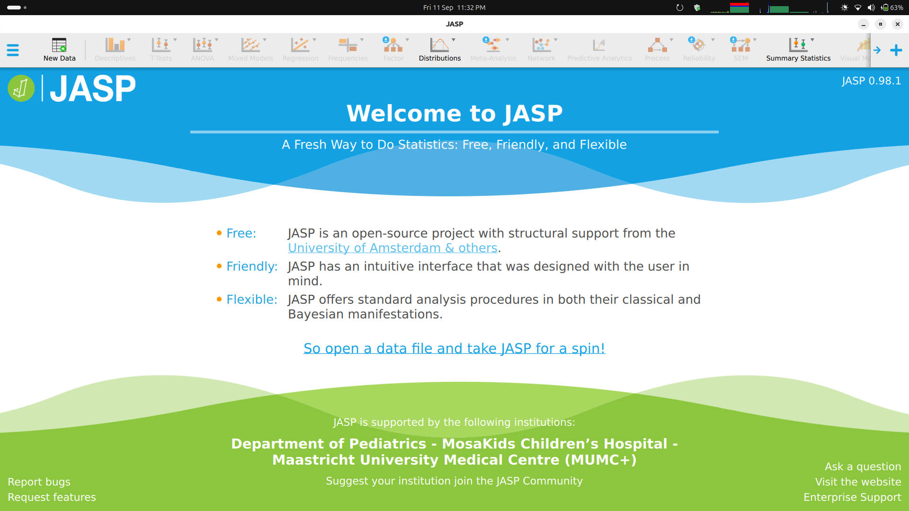
Open PocketStat at https://mohammedalisharafuddin.github.io/pocketstat/. The first load pulls about 73 MB, so give it up to a minute on lab wifi. It opens on the Data tab, and the four buttons along the bottom are the whole app: Data, Analyse, Results, Learn.
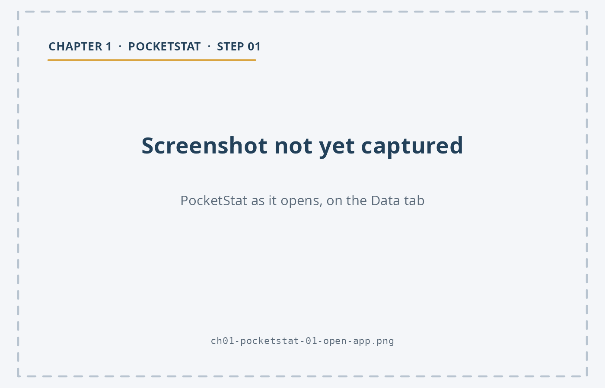
Step 2. Load the teaching dataset
Click the file menu at the top left, then Open, Computer, Browse, and choose DMM_Teaching_Data_Full.csv.
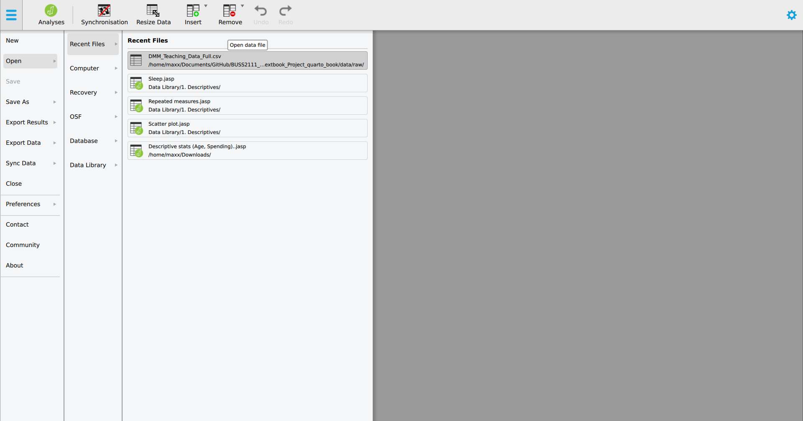
On the Data tab, open the upload card and choose DMM_Teaching_Data_Full.csv. The file is read in your browser and stays on your machine.
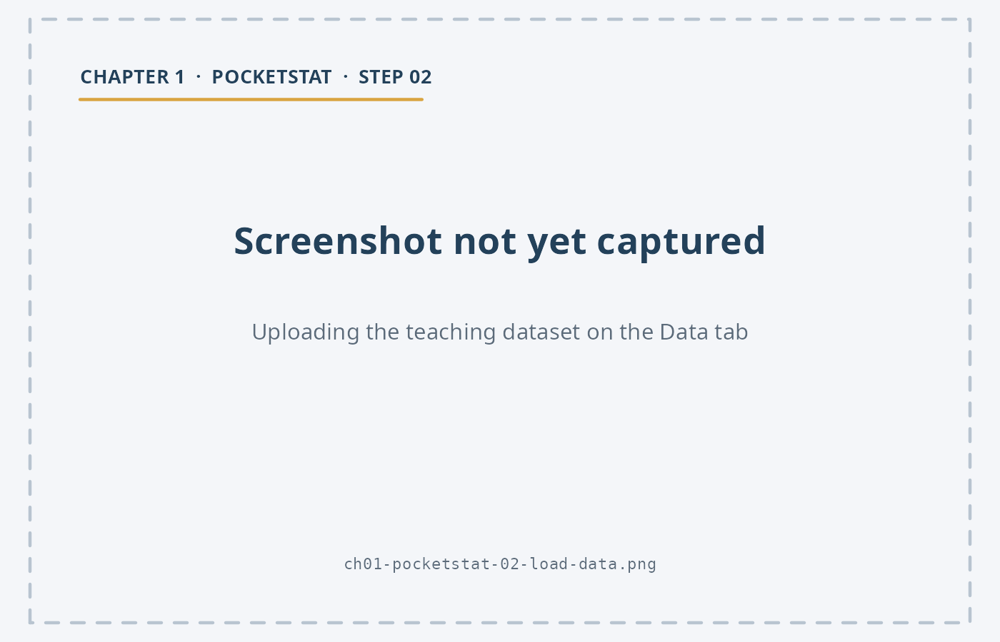
Step 3. Check the whole dataset arrived
The data view fills. Scroll to the bottom and confirm the last row is 200, then scroll right and confirm there are 26 columns. A short file usually means the wrong delimiter.
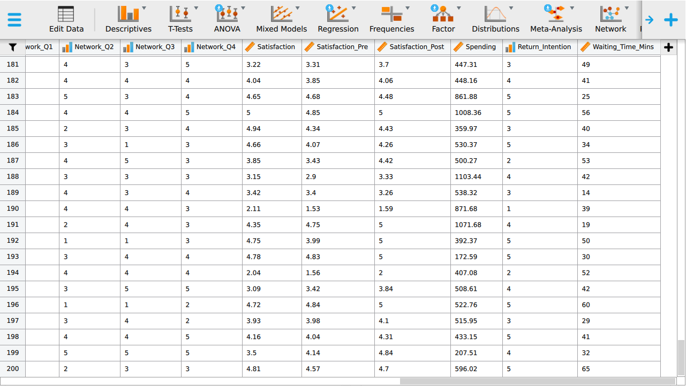
The data summary card reports the number of rows and columns. Confirm it says 200 rows and 26 columns before going further.
Step 4. Find where the variable type is shown
Each column header carries a small icon for its measurement level: a ruler for scale, three ascending bars for ordinal, and three circles for nominal. JASP guesses this from the column contents, and it guesses wrong often enough to be worth checking every time.
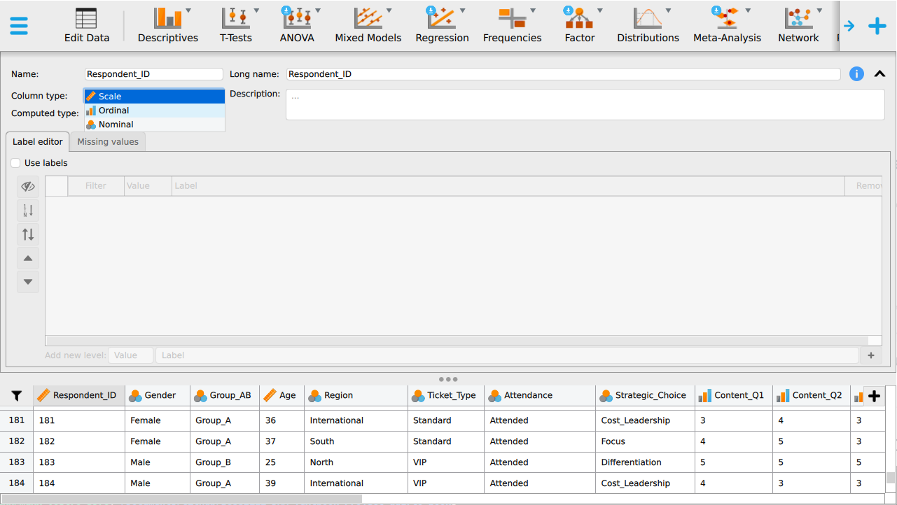
The variables card lists every variable with the type PocketStat has detected. Read it top to bottom once. The detection is a guess from the column contents, so treat it as a draft.
Step 5. Change a type when the guess is wrong
Click the icon in the column header. The three measurement levels appear and you pick the right one. The change applies to every analysis that uses the column from then on.
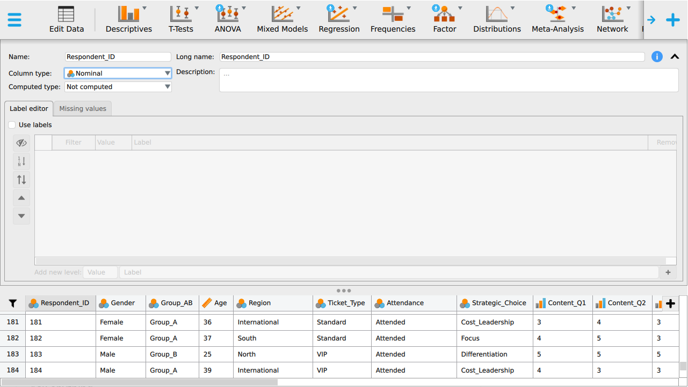
Open the cleaning card, pick the variable, and set its type there. Any analysis you run afterwards uses the new type.
Activity 2: Variable audit (35 minutes)
Working in pairs, complete an audit of the six variables.
Step 6. Read the six variables and their current types
Scroll the data view until Gender, Region, Ticket_Type, Age, Satisfaction and Waiting_Time_Mins are visible together, and note the icon on each.
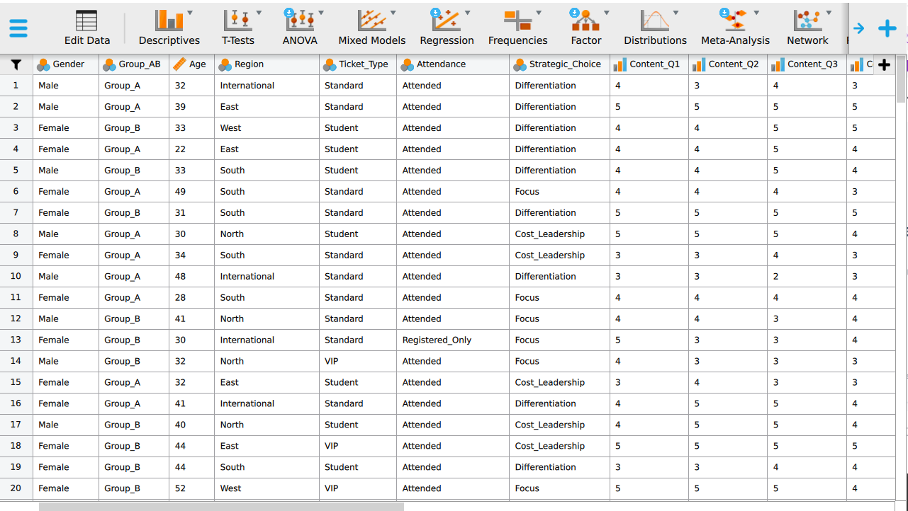
Scroll the variables card to the same six and note the type beside each.
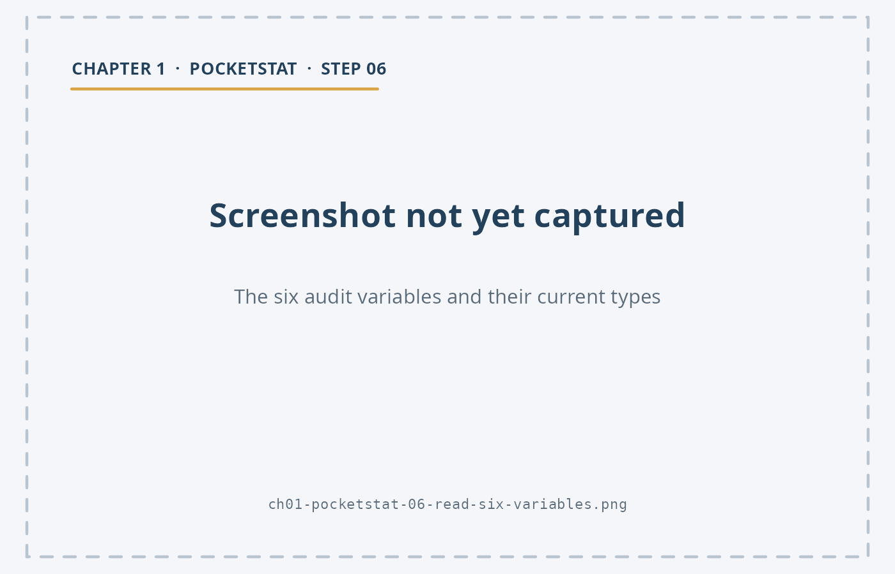
For each one, record the measurement scale, whether it is discrete or continuous where that applies, the summaries that are legitimate for it, and one summary that would be wrong.
| Variable | Scale | Discrete or continuous | Legitimate summaries | A wrong summary |
|---|---|---|---|---|
Gender |
not applicable | |||
Region |
not applicable | |||
Ticket_Type |
not applicable | |||
Age |
||||
Satisfaction |
||||
Waiting_Time_Mins |
Two of these are arguable. Decide what you think and be ready to defend it:
Satisfactionis recorded 1 to 5. Is treating it as continuous defensible? What would you have to assume, and what would you report instead if you were not willing to assume it?Ageis recorded in completed years. Is it discrete or continuous? Does the answer change what you would do with it?
Keep this table. It is part of the chapter’s submission.
Activity 3: Tables and summaries (40 minutes)
Produce four outputs, in the order below. Steps 7 to 10 give you the first.
Output 1, a frequency table for Ticket_Type
Step 7. Open the descriptives panel
Click Descriptives on the ribbon, then Descriptive Statistics. The options panel opens on the left and the output appears on the right as you work.
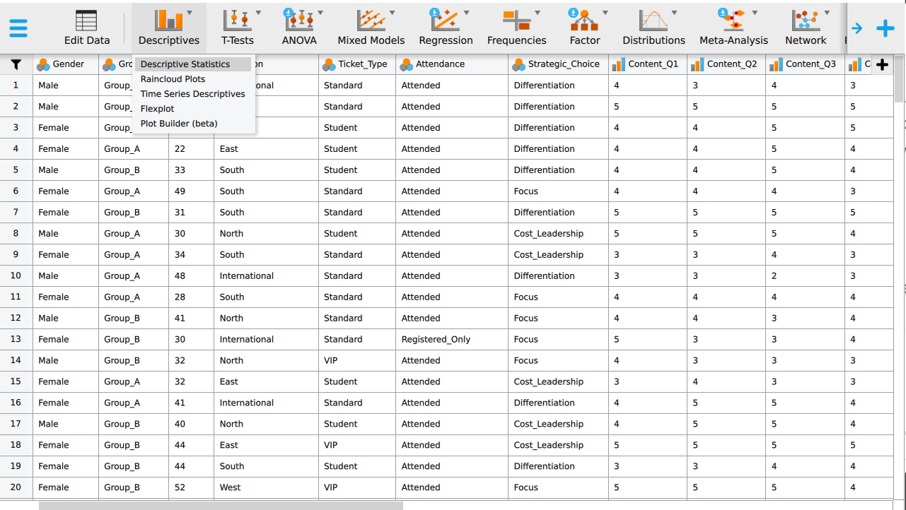
Tap Analyse on the bottom bar, then choose Descriptive statistics from the technique list.
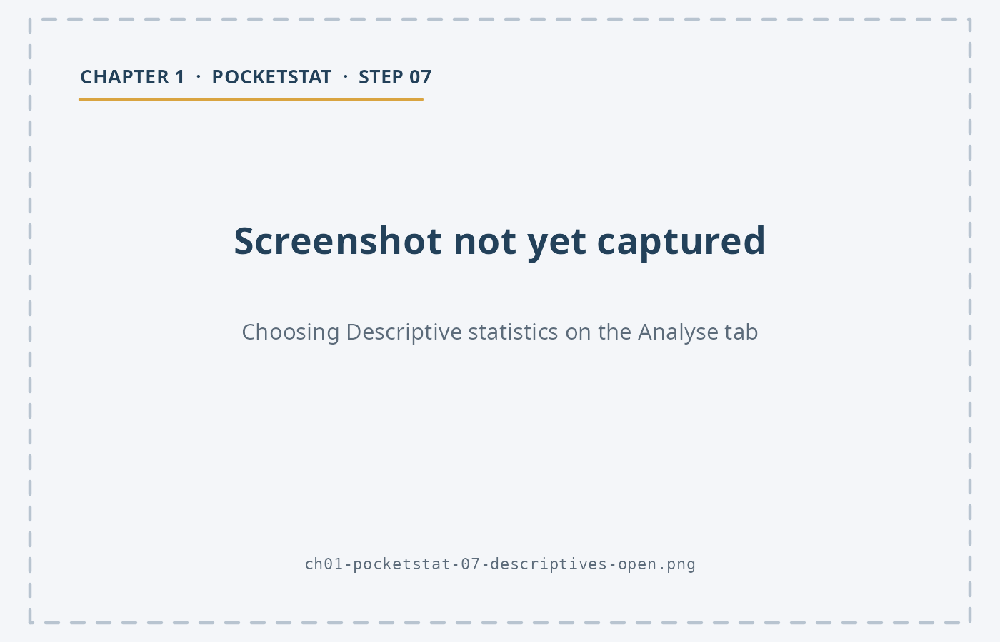
Step 8. Move Ticket_Type into the variables box
Select Ticket_Type in the list on the left and click the arrow to send it to Variables.
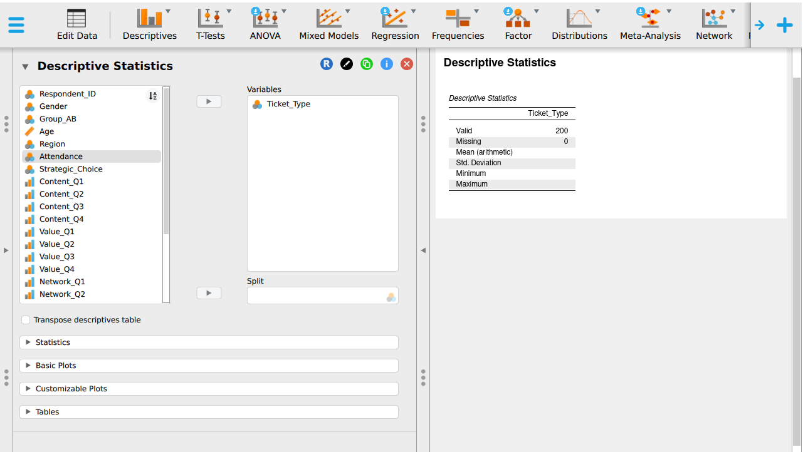
In the variable chooser, select Ticket_Type and move it into the chosen list. Categorical variables get a frequency distribution, which is the output you want here.
Step 9. Ask for the frequency table
Tick Frequency tables in the options panel. The output updates as soon as you tick it.
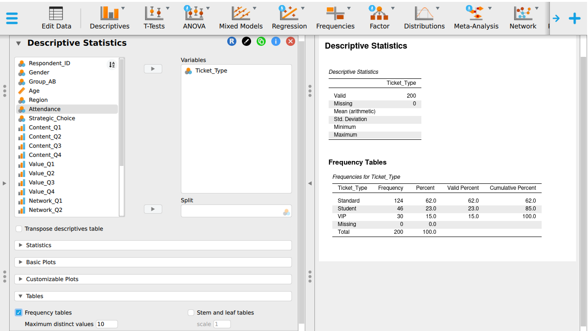
Run the analysis. PocketStat checks the data requirements before it runs and tells you if the variable type does not suit the technique.
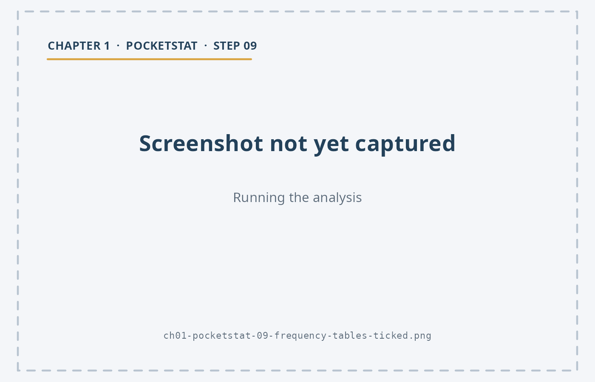
Step 10. Read the finished table
The table gives frequency, percent, valid percent, and cumulative percent for each ticket type. Relative frequency is the percent column expressed as a proportion.
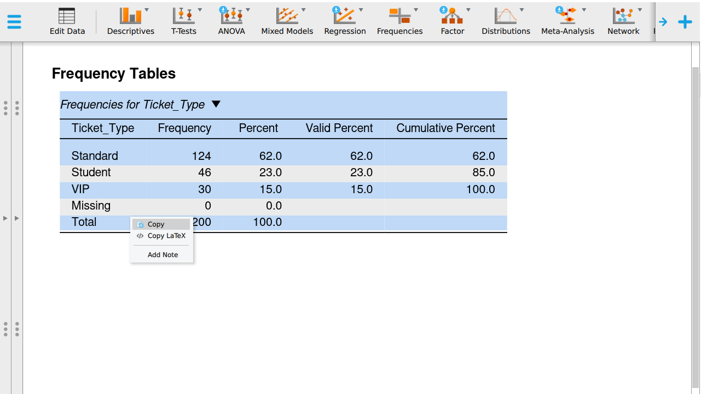
Open the Results tab. The table lists each ticket type with its count and percentage.
Check the counts sum to 200. If they fall short, some rows are missing a value. Record this as information about the data.
Output 2, a grouped frequency table for Waiting_Time_Mins
Use intervals of ten minutes. Check your interval boundaries leave no gaps and no overlaps.
Step 11. Create the ten-minute bands
Click the + at the right-hand end of the column headers to add a computed column, name it Wait_Band, and use the R-style formula box:
cut(Waiting_Time_Mins, breaks = seq(0, 100, 10), right = FALSE)right = FALSE makes each band include its lower boundary and exclude its upper one. This stops 30 minutes appearing in two bands at once.
JASP marks every new computed column as Scale, regardless of what it holds. Wait_Band holds ordered labels such as [20,30), not a number you can average, so change its measurement level to Ordinal before you run any analysis on it. This is the same variable audit from earlier in this chapter. There, you audited a column you imported. Here, you audit one you just created yourself.
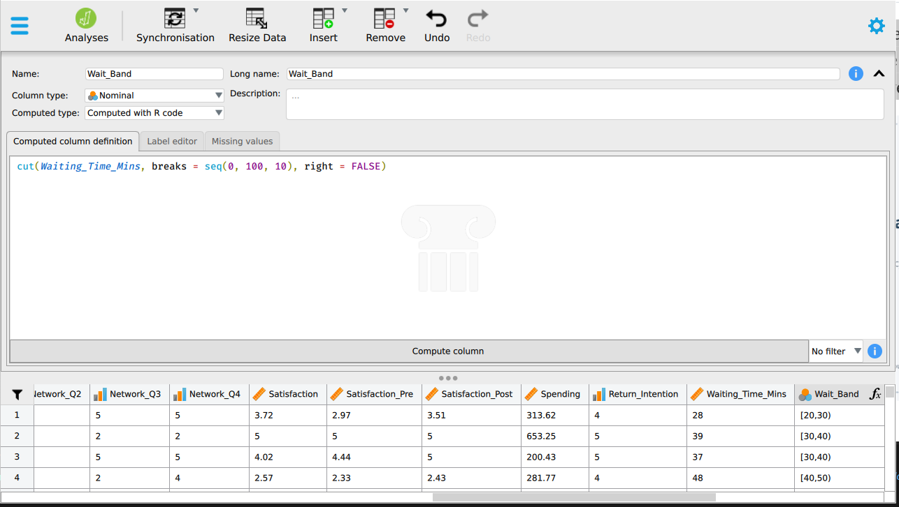
PocketStat has no banding tool, so read the bands off the picture instead. Choose Distribution shape on the Analyse tab, pick Waiting_Time_Mins, and set the histogram to ten-minute bars.
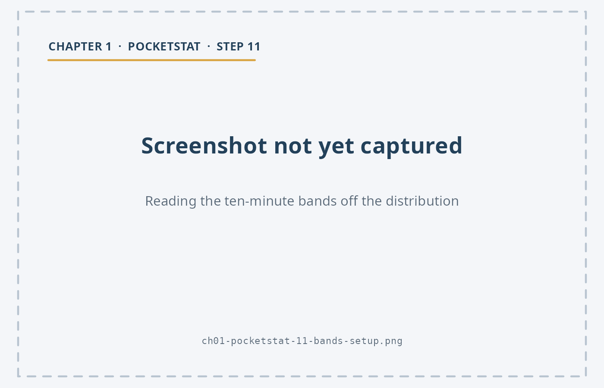
Step 12. Add the cumulative column
Run Descriptives on Wait_Band with Frequency tables ticked. The cumulative percent column is produced for you.
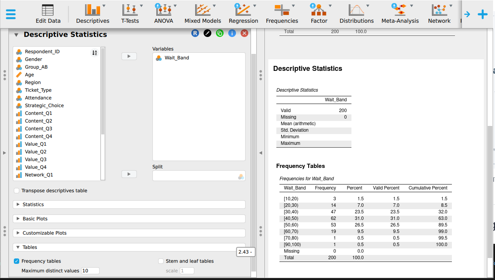
Copy the band counts into your notes and write a running total beside them. The running total is the cumulative frequency, and dividing it by 200 gives cumulative relative frequency.
Step 13. Check the finished grouped table
Read down the bands and confirm each one is ten minutes wide, that no waiting time could fall into two bands, and that the final cumulative percent is 100.
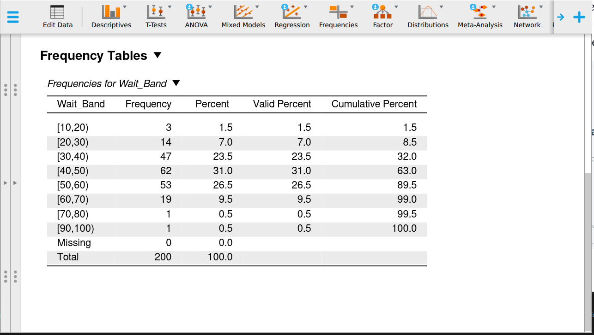
Read down the bands and confirm each one is ten minutes wide, that no waiting time could fall into two bands, and that the final cumulative total is 200.
Output 3, descriptive statistics for the three numerical variables
Step 14. Move the three variables in
Return to Descriptive Statistics and put Age, Satisfaction and Waiting_Time_Mins into Variables. Clear Ticket_Type out first so the table stays readable.
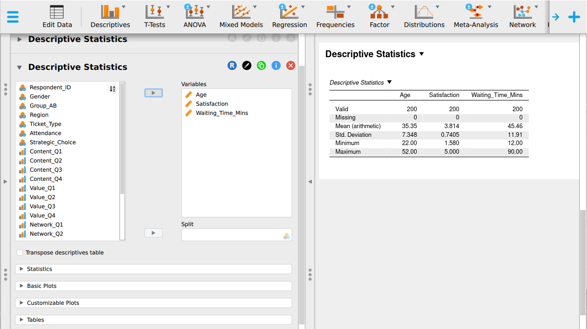
Return to Descriptive statistics and choose Age, Satisfaction and Waiting_Time_Mins. Clear Ticket_Type out first.
Step 15. Ask for the six statistics
Open the Statistics section and tick mean, median, standard deviation, minimum, maximum and quartiles. Untick anything you were not asked for, because a table with 20 rows is harder to read than one with 6.
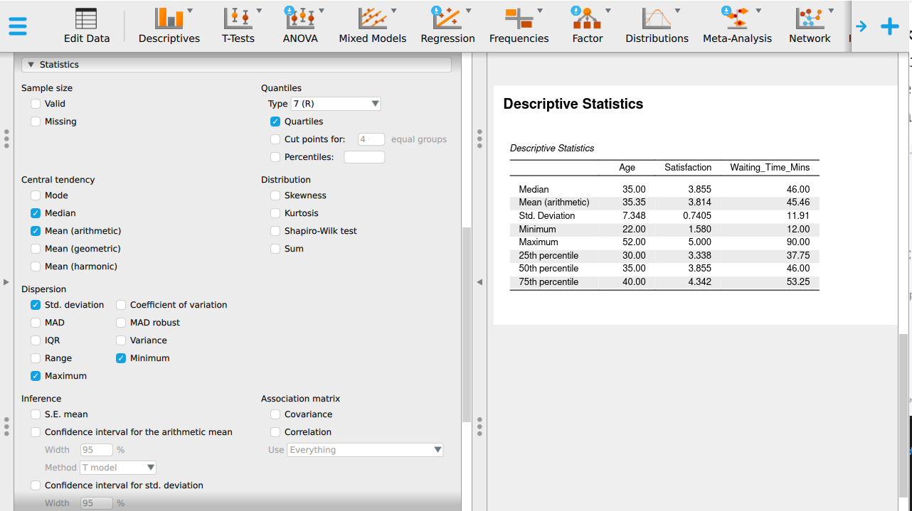
PocketStat reports centre, spread, and quartiles together for a scale variable, so there is nothing to tick. Check the options panel to see what it will report before you run it.
Step 16. Read the output table
Variables run across the columns and statistics down the rows. Read one column at a time rather than one row, because a single variable’s centre and spread belong together.
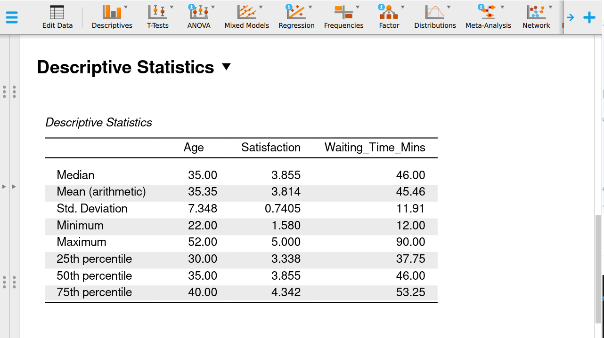
Open the Results tab. Read one variable at a time, taking its centre and its spread together.
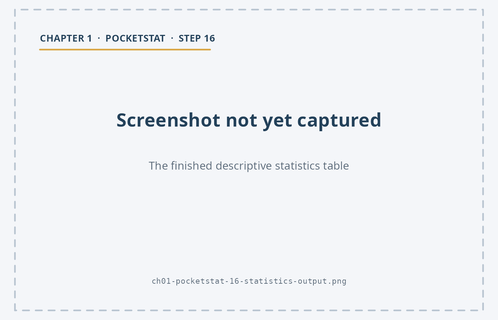
Output 4, two plots
Step 17. Plot Region as a bar chart
With Region in Variables, open the Plots section and tick the bar plot. Check the vertical axis starts at zero.
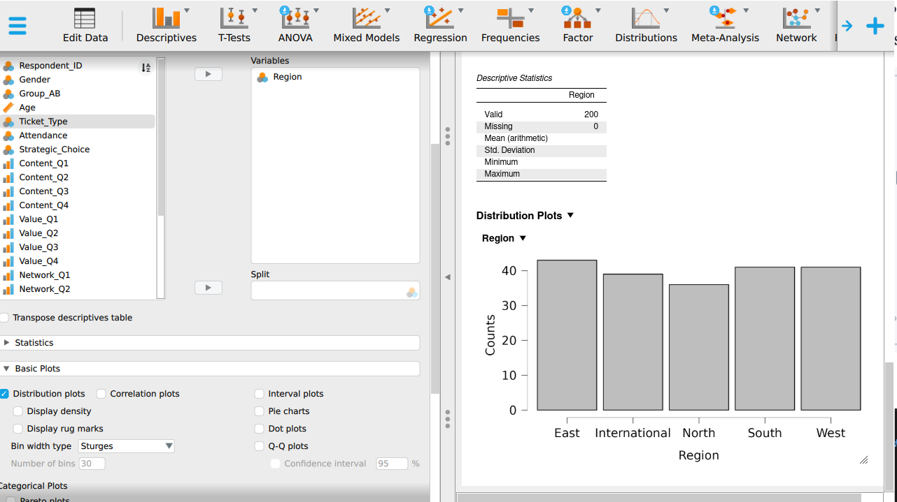
Run Descriptive statistics on Region. The frequency chart draws one bar per region. Check the vertical axis starts at zero.
Step 18. Plot Waiting_Time_Mins as a histogram and a boxplot
With Waiting_Time_Mins in Variables, tick the distribution plot and the boxplot in the Plots section. Read them together: the histogram shows the shape and the boxplot shows the quartiles and the distant values.
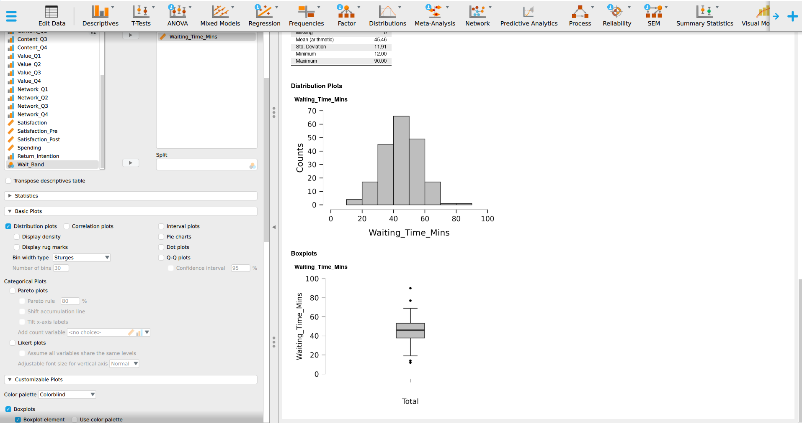
Choose Distribution shape on the Analyse tab and pick Waiting_Time_Mins. The histogram and the boxplot are drawn on the same scale, so the tail lines up across both.
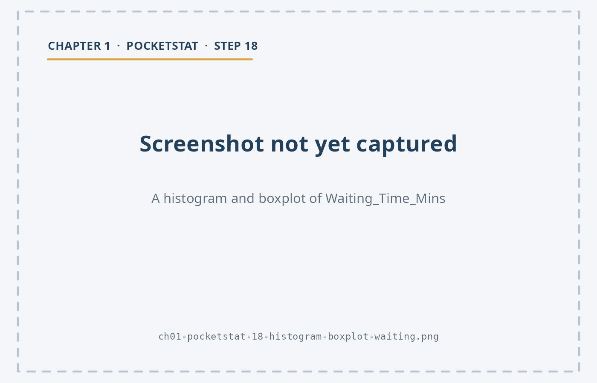
Then answer three questions from your own output:
- What proportion of customers waited under 40 minutes? Which column gave you that most directly?
- Compare the mean and median of
Waiting_Time_Mins. What does the comparison say about the shape, and did the histogram agree? - Is the mean of
Satisfactiona defensible summary here? Say what you would report and why.
Activity 4: Manager summary (25 minutes)
Write one paragraph, no more than 120 words, answering the chapter’s decision question: is the service any good?
A strong paragraph does five things:
- States what was measured and on how many cases.
- Gives the centre and the spread, in the original units.
- Names the decision-relevant tail, not only the average.
- Says what the evidence leaves open.
- Ends with something a manager could do.
A weak paragraph reports the procedure, gives a mean with no spread, or quietly promotes a sample statistic to a fact about all customers.
Write it for a service manager who has not seen the data and will not read a table.
What good looks like
Waiting time was recorded for 200 customers at one branch over one month. Half waited 46 minutes or less and the middle half fell between 38 and 53 minutes, so the service is consistent for most people. Nineteen customers, just under one in ten, waited more than an hour, and two waited over 75 minutes. Return intention is a single ordinal rating, so the median of 4 is the honest summary, and the average of 3.66 describes no customer. These figures describe this branch in this month and say nothing about other branches. The long waits are worth investigating first, because that is where a 60-minute service standard is breached.
110 words, under the 120-word limit. Each of the five requirements above has a specific sentence doing its job:
- “Waiting time was recorded for 200 customers at one branch over one month” states what was measured and the sample size.
- “Half waited 46 minutes or less and the middle half fell between 38 and 53 minutes” gives the centre and the spread, both in minutes, the same units the manager already thinks in.
- “Nineteen customers, just under one in ten, waited more than an hour, and two waited over 75 minutes” names the tail the average alone hides.
- “These figures describe this branch in this month and say nothing about other branches” states what the evidence leaves open.
- “The long waits are worth investigating first, because that is where a 60-minute service standard is breached” ends with something a manager could do next.
Every figure in the paragraph is the real figure from the file. You should be able to produce each one from the outputs you built in Activity 3, so check your own paragraph against your own output before you compare it with anyone else’s.